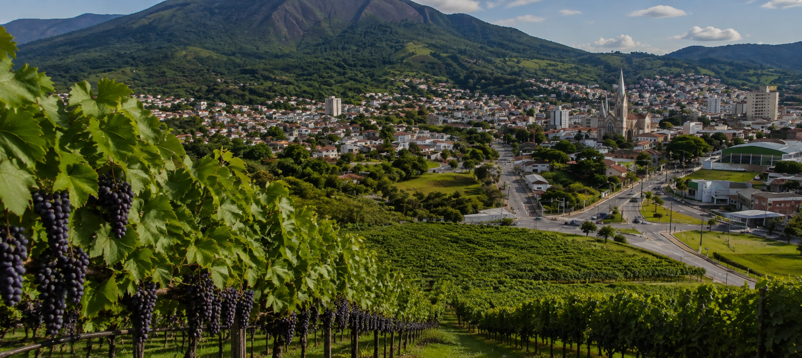
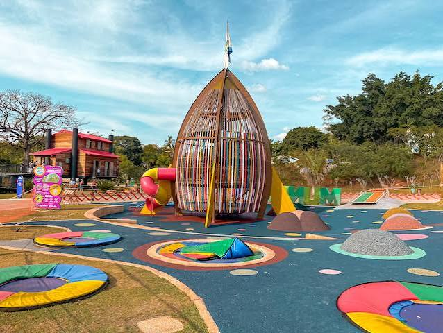
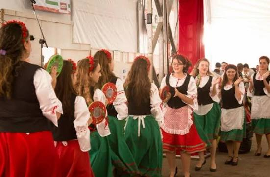

DESCUBRA JUNDIAÍ
Conheça a história, a natureza e as experiências que fazem Jundiaí ser uma cidade diferente.
Curiosidades
Descubra fatos e curiosidades sobre a história e a cultura de Jundiaí.
SERVIÇOS
Conheça alguns serviços e experiências que Jundiaí proporciona para aproveitar a cidade.
Vinícolas
Lazer
Turismo Rural
História e Cultura
Gastronomia
CONHEÇA ALGUMAS ROTAS TURÍSTICAS
Escolha uma rota e descubra diferentes experiências que Jundiaí oferece.

Brincar
Lugares para diversão e lazer.
Centro Histórico
Conheça a história e arquitetura de Jundiaí.

Dos Sabores
Descubra a gastronomia da cidade.

Uva e Vinho
Conheça a tradição da produção de uvas e vinhos.

Cultura Italiana
Descubra a influência italiana presente na cidade.
GALERIA
Um pouco das paisagens e experiências de Jundiaí.
Veja mais